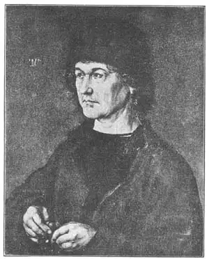
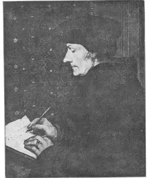

18
Ü AND JR.
丢勒和小霍尔拜因

“DON’T forget to dot your i ’s. Be sure to cross your t ’s.” Has your teacher ever said that to you? I always used to have a hard time remembering to dot all the i ’s when I wrote compositions at school. But suppose I had gone to school in Germany. There the school children have to be careful about dotting u ’s as well as i ’s! For in Germany there are two kinds of u —a plain u like ours, and a u with two dots on it like this, ü . A u with two dots is sounded something like our u in pu re.
I wanted to tell you about the dotted u right at the beginning of this chapter because if I didn’t I know you would ask what the two dots are for when you see them on the name of the German artist Albrecht Dürer. His name, you notice, is not Durer but Dürer. He lived and painted at the same time as Titian, Tintoretto, Michelangelo, and Leonardo da Vinci. In fact, he knew some of the great Italian artists personally, for he took a trip to Venice and stayed there for some time. Germany was having a Born Again time as well as Italy and Flanders and later the Netherlands, and Albrecht Diirer was the great artist of the German Renaissance.
Dürer didn’t paint much like the Italians. He painted many kinds of pictures, but his portraits are more famous than his other paintings. And besides paintings, Dürer made engravings. To make an engraving the artist cuts the lines of a picture in wood or copper. Then he puts ink in the lines and presses the wood or copper on a piece of paper. The picture that is printed this way is an engraving.
Dürer made many engravings and he is one painter who is as celebrated for his engravings as for his paintings. Some of his engravings —the one called “Melancholy,” for instance—are as well-known all over the world as his best paintings.
Dürer’s woodcuts also are rightly famous. A woodcut is just the opposite from an engraving. The lines are drawn on the wood and then the wood is cut away from the lines, so that the lines are left raised. Then the raised lines are inked and pressed on the paper.
When Dürer made the trip to Venice that I mentioned, he was welcomed and honored by the Venetians as a famous man. The Venetian artist Bellini, who was then an old man, asked Dürer one day if he would give him one of the special brushes he used to paint the hair in his portraits. Dürer said, “Certainly,” and gave Bellini the brush he was using.
“Why,” said Bellini, “this is just an ordinary brush. Do you really paint those wonderful hairs with a brush like this?” Then Dürer took the brush and with it painted some hairs as only he could paint them.
Dürer admired the works of the Italian painters, but when he returned to Germany he continued to paint in his own way, without trying to make his pictures have an Italian look.
Albrecht Diirer painted several portraits of himself. He was able to do this, of course, by looking in a mirror and painting what he saw in the glass. From these self-portraits we know he was a very handsome man. Several of the other portraits he painted are equally famous. I think you’ll like the one of his father on the opposite page.
Dürer was apt to put a great deal of detail into his pictures. He filled the paintings with all kinds of odds and ends, and every tiny button is painted as carefully as if it were as important as the person’s face. Most of the German artists did this and in most of their pictures so much detail is a drawback. Your eye is drawn from the important things to the unimportant ones. But although Dürer often had just as much detail as other German painters, he was a great enough artist to keep the little things in the picture from becoming too important. The second great Renaissance artist of Germany also was a portrait painter and a maker of woodcuts. His name was Hans Holbein (Hole’bine) and we have to speak of him as Hans Holbein the Younger because his father was also an artist named Hans Holbein. If Holbein the Younger were alive now he would write his name “Hans Holbein, Jr.”

No.18-1 DÜRER’S FATHER（《丢勒的父亲》）
DÜRER（丢勒 作）
The Holbeins moved to Switzerland, the country of the Alps, and Hans Holbein the Younger became the friend of a very famous man who lived there—Erasmus. Erasmus was a great thinker and wrote learned books. Holbein painted five portraits of Erasmus. The one most people prefer is the one shown on the opposite page.
It shows a side view of Erasmus. A side view of some one is called a profile. Erasmus sits writing at his desk. There do not seem to be very many details in this portrait, but in another famous portrait by Holbein, called “Portrait of Georg Gisze,” there are about twenty-five articles beside Georg Gisze himself. And yet, like Diirer, Holbein was able to keep them in their place so that after all Georg is the chief thing your eye looks at. Indeed, he left the unimportant details out of the faces of his portraits, putting in only the lines that would tell most.

No.18-2 ERASMUS（伊拉斯谟）
HOLBEIN THE YOUNGER（小汉斯·霍尔拜因 作）
Holbein found his business of painting was not doing so well in Switzerland, so he decided to take a bold step. He would go to England and see what work he could get there. He got a letter of introduction from Erasmus and went. The English liked his work and he painted portraits of most of the important Englishmen of the time including the king, Henry VIII.
The portraits by Hans Holbein are usually liked by boys and girls better than those by any other painter, except perhaps Frans Hals. And that is true for a great many grown-ups too. So I’m pretty sure you will like them yourself and that you would enjoy a picture book of portraits by this master portrait painter.
But don’t forget Diirer. You’ll like his pictures too.
Albrecht Dürer
Hans Holbein the Younger
I wonder which you are going to like the better.
【中文阅读】
“不要忘记在字母i上加一点。一定要在字母t上画一横。”老师曾这样说过吧？我在学生时代写作文时，总是记不住在字母i上加一点。但假如我去德国上学的话，那儿的学生们不仅会注意在i上加一点，还会在字母u上点点！因为u字母在德国有两种写法——一种是像我们的简单的u，还有一种是在u上加两点，即ü。加上两点的u就像单词“pure”中u的发音一样。
我想在本章节一开始就介绍加上两点的u。因为如果我不说的话，我想当你看到德国画家阿尔布雷希特·丢勒的名字时，一定会问他名字上的两点是干吗用的。你会看到他名字里的u上加了两点。他和前面提到的提香、米开朗基罗还有列奥纳多·达·芬奇处于同一时代。事实上，丢勒本人也认识一些伟大的意大利画家，因为他曾经去过威尼斯，还在那里待过一段时间。德国和意大利、佛兰德斯以及荷兰一样，也经历过再生时代。阿尔布雷希特·丢勒可以说是德国文艺复兴时期最伟大的画家。
丢勒的绘画方式同意大利画家的绘画方式不大一样。他的绘画题材多种多样，但其中肖像画还是要比其他画更为有名。除了油画之外，丢勒也画版画。在画版画时，画家先在木板或铜板上刻画，然后在刻出的线条里倒入墨汁，再把沾有墨汁的刻板压在一张纸上。这样印出来的图画就叫做版画。丢勒制作过很多版画。他是唯一一位既擅长版画又精通油画的画家。他有些版画就像他最好的油画作品一样闻名于世，比如版画《忧郁》。
丢勒的木刻画也很有名。木刻画和版画的制作方式刚好相反。画家先在木板上画好线条，然后把线条以外的木头部分刨掉，这样只剩下凸出的线条。接下来给凸出的线条沾上墨汁再压在纸上便成了木刻画。
当丢勒在威尼斯观光旅游时，威尼斯人非常欢迎和尊重他，把他当做名人一样盛情接待。当时威尼斯画家贝利尼已经很老了，有一天他问丢勒：“你愿意送我一支你画人物头发时用的特殊画笔吗？”丢勒说：“当然可以。”于是就把自己用的画笔送给了贝利尼。
贝利尼看后说：“这是为什么呢？这只是一支很普通的画笔呀，你真是用这支笔画出那么好看的头发吗？”听到他这么说，丢勒当即拿起画笔画了一些头发。也只有丢勒才能这样画出头发来。
丢勒非常欣赏意大利画家的作品，但当他回到德国后，他还是继续按自己的风格画，而不是模仿意大利画家的绘画风格。
阿尔布雷希特·丢勒给自己画过几幅自画像。当然，他只要对着镜子，然后画出自己在镜子中的样子来就可以了。从他的这些自画像中我们可以看出，他长得非常英俊。他为别人画的肖像画也同样很有名。我想，你会喜欢另一页上他为他父亲画的肖 像画的。
丢勒喜欢在画中添加许多小细节。他画里有各种各样的小玩意儿，一粒小小的纽扣也画得细致入微，就像和人物的脸庞一样重要。大多数德国画家都喜欢这么作画，但是在大部分画家的画作中，太多的细节反而成了一种缺陷，因为视线很容易被这些次要的细节所吸引，不能更好地关注重要部分。不过，尽管丢勒也和其他德国画家一样注重细节，但他却有能力将这些细节处理得恰到好处，绝不会让它们喧宾夺主。
德国文艺复兴时期第二位伟大的画家同样也既画肖像画，又制作木刻画。他叫汉斯·霍尔拜因。我们喊他小汉斯·霍尔拜因，因为他父亲也叫汉斯·霍尔拜因，也是一位画家。假如小汉斯·霍尔拜因活到现在，他一定会把自己的名字写成“小汉斯·霍尔拜因”。
霍尔拜因一家后来搬到了因阿尔卑斯山而闻名的瑞士。小汉斯·霍尔拜因与住在那儿的一位大名人成了好朋友，这人就是伊拉斯谟。伊拉斯谟是一位伟大的思想家，他编写了许多深奥的书籍。霍尔拜因给伊拉斯谟画过五幅画像。其中最受人们欢迎的是另一页上的那幅画。
这幅画只展示了伊拉斯谟的一个侧面。画某人的侧面就叫侧像画。画中伊拉斯谟正坐在书桌旁写作。这幅画中似乎没有过多的细节，但在霍尔拜因的另一幅有名的肖像画《吉斯泽画像》中，吉斯泽身旁摆放着大约二十五篇文章。但是像丢勒一样，霍尔拜因也能很巧妙地处理了这些细节，让我们把目光集中到主人公乔治·吉斯泽身上。事实上，他在画肖像画时，会省去人物脸上无关紧要的细节，只留下最有说服力的几笔。
霍尔拜因发现他的绘画事业在瑞士干得并不好，于是他做了个大胆的决定，前往英国，看看在那里能有什么发展。他拿着伊拉斯谟给他写的一封推荐信动身去了英国。结果证明，英国人喜欢他的画。他给当时大多数重量级的英国人画过肖像画，包括英王亨利八世。
一般来说，或许除了弗兰斯·哈尔斯，相比于其他任何画家的肖像画，孩子们更喜欢小汉斯·霍尔拜因的肖像画。而事实上，他的画也受到许多大人们的青睐。所以，我确信你也会喜欢这位肖像画大师的作品，如果你见到他的肖像画画册，一定会特别开心。
但是不要忘了丢勒，你肯定也会喜欢他的画。
阿尔布雷希特·丢勒
小汉斯·霍尔拜因
不知道你会更喜欢谁。